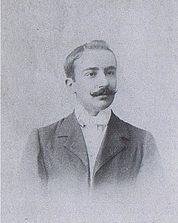

Fundador del Sevilla FC
El futbol fue introducido en Sevilla a finales del siglo xix los ingleses aprovecharon y crearon Sevilla Football Asosiaton El primer presidente del Sevilla Football Club fue Edward Farquharson Johnston el Sevilla Football Club siguió jugando al fútbol en los años siguientes con equipos formados por ingleses, alemanes y españoles, y paulatinamente fue aumentando el número de jugadores españoles entre las filas sevillistas, frente a la disminución de los extranjeros. Fue especialmente sonora la incorporación en 1896 de Luis Moliní, un ingeniero que fue trasladado a Sevilla para trabajar en el puerto y que había recalado en las filas del Sevilla Football Club después de haber estado el Huelva Recreation Club.
El Sevilla ha ganado 7 veces la Uefa Europa League la primera en Eindhoven contra el Middlesbroug 4-0 goles de Luis Fabiano Doblete de Maresca y gol de kanoute el entrenador fue Juande Ramos la segunda fue en Glasgow contra el Español 2-2 (2-3 en penaltis) goles de Adriano y de kanoute y en penaltis marco Kanoute Dragutinovic y Antonio Puerta fallo Dani Alves la tercera fue en Tuirn contra el Benfica 0-0 (4-2 en penaltis) en los penales marco Bacca,M'Bia,Coke y Gameiro la cuarte fue en Basilea 2-3 contra el Dnipro goles de krychowiak y doblete de Carlos Bacca la quinta fue en Basilea contra el Liverpool 1-3 goles Gameiro y doblete de Coke la sexta fue en Colonia el Inter de Milan 3-2 doblete de Luuk de Jong y una chilena de Diego Carlos que se recordara para siempre y la septima fue en budapest contra la Roma 1-1 (4-1 en penales) goles de Mancini en propia y en penales marco Ocampos Lamela Rakitiç y Montiel